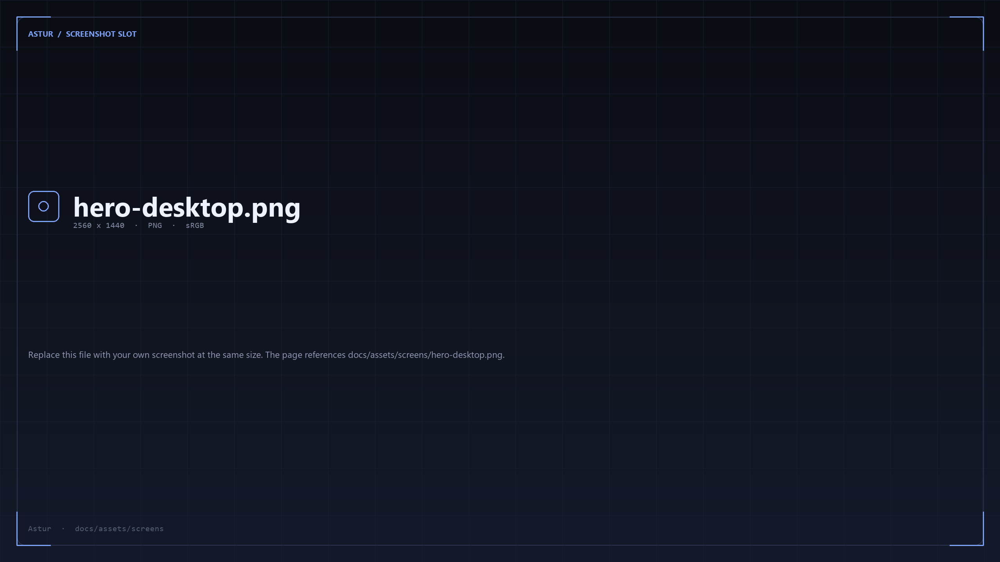
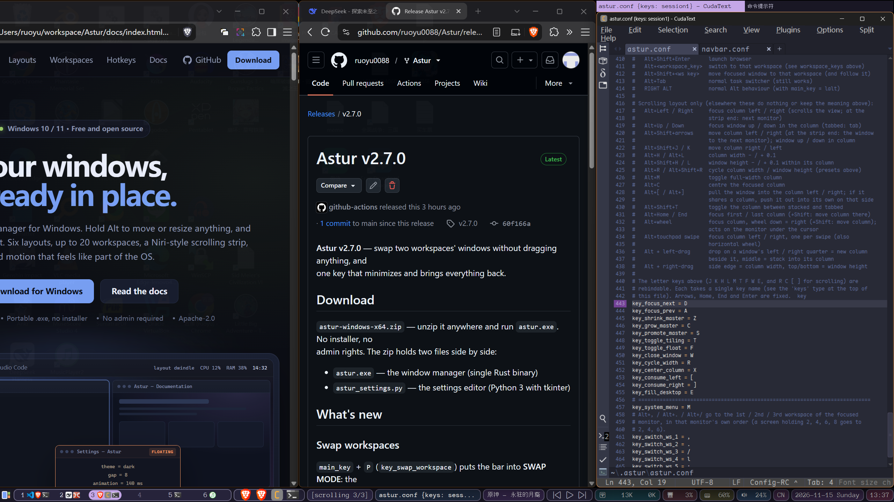

Alt-drag from anywhere
Grab a window by any pixel, not just its title bar. Alt + right-drag resizes from the nearest corner, with a red bracket showing which one. It works on windows that never had a usable title bar.
Mouse controlsAstur is a tiling window manager for Windows. Hold Right Alt to move or resize anything, and every window finds its slot. Six layouts, up to 20 workspaces, a Niri-style scrolling strip, and motion that feels like part of the OS.
Astur adds tiling to the Windows you already use. It does not replace Explorer, skin the taskbar or ask you to learn a new desktop. Run it, and the next window you open has a place.
Grab a window by any pixel, not just its title bar. Alt + right-drag resizes from the nearest corner, with a red bracket showing which one. It works on windows that never had a usable title bar.
Mouse controlsDwindle, master, columns, grid, monocle and a Niri-style scrolling strip. Pick one for the whole desktop, one per monitor, or one per workspace. Every layout is a keypress away in Settings or IPC.
Compare layoutsKeep one workspace per project, or one per mood. Switch with the number row, move a window with Shift, or swap two entire workspaces. Names, icons and wallpapers are optional.
How workspaces workColumns live on an endless horizontal strip. Open as many as you need, resize them, stack windows in a column, or turn one into tabs. Off-screen columns park themselves instead of leaking onto another monitor.
Explore scrollingA per-monitor status bar with three widget zones: workspaces, title, app buttons, CPU, RAM, battery, network, volume, keyboard layout, disk, uptime, music and your own command output. Seven palettes, four shapes.
Meet the barAlt + Space opens a fuzzy launcher over apps, open windows, files, clipboard history and a calculator. Alt + M opens power and setup actions. Both are keyboard-first, and both stay out of the way until called.
Launcher and menuNo mock desktop, no theme installed over Explorer: this is Astur tiling ordinary Windows applications.

Layout is data, not a mode you get stuck in. Set a default, override it for one monitor, or override it again for one workspace. Windows re-tile as soon as the layout changes.
Each new window splits the largest free space, spiralling toward a corner. The default: quick to fill, no configuration.
One large window on the left, the rest stacked on the right. Alt + Z and Alt + C resize the master area.
Equal-width columns, one window each. Predictable, easy to scan, and a good fit for wide monitors.
A balanced rows-and-columns grid. Useful for dashboards, monitoring and many windows of the same size.
Every tiled window fills the workspace and the focused one sits on top. Switch with Alt + D / Alt + A.
A horizontal strip of columns. Keep opening windows; the ones past the edge are a scroll away, not hidden.
A workspace is a whole set of windows, not a virtual desktop bolted on top. Astur keeps each one's layout, focus and scroll position, and switching is instant even when the animation is on.
The active workspace is filled; occupied ones keep a subtle outline. Names and icons are optional.
Tiling is the default, not a prison. Alt + F lifts the focused window out of the layout; the windows behind it close the gap and re-tile immediately. Press it again to drop it back in.
Scrolling lays windows out like Niri: a column strip that extends past the display. Instead of squeezing another window into the same space, you add a column and scroll to it.

The bar is optional, but it is where Astur stops being invisible. Each monitor gets its own bar showing that monitor's workspaces and focused window, with widgets split into left, centre and right zones.
Alt + Space opens a launcher that searches as you type: installed apps, open windows, indexed files, custom commands, a calculator and optional clipboard or emoji providers. Enter launches; Shift + Enter reveals a file; Tab shows size, path and modified time.
Alt + M opens the system menu: lock, sleep, restart and shut down, plus Astur's own setup actions, screenshots, reload and quit. Both menus are theme-aware, keyboard-driven and configurable down to their categories.
Every shortcut is held with one main key. It is Right Alt by default, so Left Alt stays available to applications. Pick Left Alt, Win, Ctrl + Win or Caps Lock instead if you prefer; every label and cheat sheet follows the choice.
Focus by direction. Hold Shift to move the focused window; on a scrolling monitor, it moves the column.
No title bar needed. The nearest corner is chosen from where the pointer is, not from which edge you grabbed.
Green keys switch workspaces. 1–0 go to a workspace; , . / jump to the first three workspaces of the monitor you are on, and L ; ' to the first three of the next monitor. Shift + a workspace number moves the focused window there. Some keys change meaning on a scrolling monitor: Z / C resize columns, R cycles widths, X centres, and [ / ] stack windows. See the complete hotkey table.
The layout switch happens immediately and correctly; the animation is a composited overlay drawn over the result. A dropped frame can never lose a window, and a slow application cannot make the switch late.
A directional push between workspaces. The default, and the one that reads most like a physical desktop.
Overshoot and settle, Hyprland-style. Configurable duration and easing; off is always one setting away.
A cross-fade between the old and new workspace. Quiet, and easy on low-powered machines.
Windows also glide to their new slots on open, close, re-tile, resize and scroll. Astur places every window instantly, then draws the move with live DWM thumbnails over the wallpaper. Another hotkey re-aims the glide from where it is; a click reveals the result at once.
Astur ships as a portable zip. There is no service, no driver and no admin prompt. Put it anywhere you like, run astur.exe, and your configuration appears in %USERPROFILE%\.astur\ on first launch.
astur.exe and the settings editor.Windows SmartScreen may warn about an unsigned executable the first time. Choose “More info” and “Run anyway”. Astur is open source; the release is built from this repository.
Yes. Astur is open source under Apache-2.0. There is no paid tier, account or telemetry. The source, releases and issue tracker are on GitHub.
No. Windows does not let a normal process move or hide elevated windows, so an admin terminal or Task Manager stays where it is and remains visible on every workspace. Run Astur as admin too if you need those tiled.
No. Astur is a window manager, not a shell. Explorer, the taskbar and the Start menu keep working. Taskbar hiding is optional and reversible; quitting Astur always puts the taskbar back.
Each monitor can have its own layout, its own workspaces, and its own bar. Workspaces can be shared across monitors or independent per monitor. Full-screen and maximised windows are handled per monitor, not stretched across the virtual screen.
Alt + T turns tiling off, and window rules can ignore a game or leave it floating. Astur does not inject into applications or hook their rendering; it moves windows with the normal Win32 APIs.
Two commented files in %USERPROFILE%\.astur\: astur.conf for the window manager and navbar.conf for the bar. Save either one and Astur reloads it about 0.1 seconds later. The tray menu opens a settings editor if you prefer widgets to text.
Yes. Astur targets Windows 10 and 11, is per-monitor DPI aware, and falls back to Segoe MDL2 Assets for bar icons on Windows 10.
Quit from the tray, delete the executable, and remove %USERPROFILE%\.astur\ if you want the configuration gone too. There is no installer, service or registry entry to clean up.